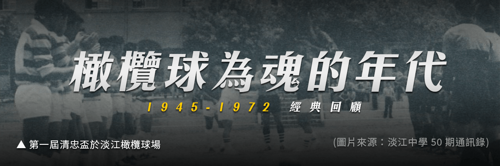

橄欖球為魂的年代

1945 年 8 月 15 日，日本戰敗投降，11 月，臺灣北部教會指派林茂生傳教士擔任董事長兼任校長，接收淡江中學，臺灣光復。然而光復後不久，就發生了二二八事件，因戰爭而中斷十年的淡江橄欖球隊，正準備接受更嚴苛的挑戰。
1946 年 3 月 29 日新竹省運會，淡江校友以臨時編組的方式，招聚橄欖球同好，組成紅、白隊伍，以橄欖球表演賽，揭開戰後臺灣橄欖球運動的序幕，6 月 2 日於臺北新公園復出，與建國中學隊以 6 比 6 打成平手，比賽象徵的不只是戰後首場中學比賽，也是兩所百年名校對抗的開始。同年 11 月，「民報社」主辦的「臺灣省第一屆橄欖球錦標賽（大會賽）」於臺北新公園開賽。當時參與的中學組有建中、大同、新竹商職、臺北工業、淡江五隊。建中自此開始 19 連霸，淡江則處於亞、季軍，與建中隊頡頏。
淡江橄欖球隊持續耕耘，戰後 30 年間，橄欖球已成為淡江魂魄所在，學生組隊打班際比賽，再遴選校隊出外比賽；學生也普遍都瞭解球賽規則，更自動到場邊加油，橄欖球術語也融入學生生活，這種普及性是一般學校難以企及。
1962 年2 月，淡江更成立「淡江中學校友橄欖球俱樂部」（淡江OB）。校友會催生了第一屆「清忠盃」的誕生，用以紀念陳清忠校長傳球之功，比賽延續至今未曾中斷。